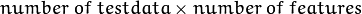
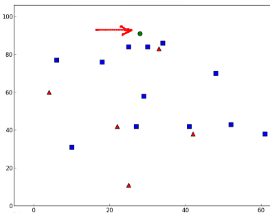

In this chapter, we will understand the concepts of k-Nearest Neighbour (kNN) algorithm.
kNN is one of the simplest of classification algorithms available for supervised learning. The idea is to search for closest match of the test data in feature space. We will look into it with below image.
In the image, there are two families, Blue Squares and Red Triangles. We call each family as Class. Their houses are shown in their town map which we call feature space. (You can consider a feature space as a space where all datas are projected. For example, consider a 2D coordinate space. Each data has two features, x and y coordinates. You can represent this data in your 2D coordinate space, right? Now imagine if there are three features, you need 3D space. Now consider N features, where you need N-dimensional space, right? This N-dimensional space is its feature space. In our image, you can consider it as a 2D case with two features).
Now a new member comes into the town and creates a new home, which is shown as green circle. He should be added to one of these Blue/Red families. We call that process, Classification. What we do? Since we are dealing with kNN, let us apply this algorithm.
One method is to check who is his nearest neighbour. From the image, it is clear it is the Red Triangle family. So he is also added into Red Triangle. This method is called simply Nearest Neighbour, because classification depends only on the nearest neighbour.
But there is a problem with that. Red Triangle may be the nearest. But what if there are lot of Blue Squares near to him? Then Blue Squares have more strength in that locality than Red Triangle. So just checking nearest one is not sufficient. Instead we check some k nearest families. Then whoever is majority in them, the new guy belongs to that family. In our image, let’s take k=3, ie 3 nearest families. He has two Red and one Blue (there are two Blues equidistant, but since k=3, we take only one of them), so again he should be added to Red family. But what if we take k=7? Then he has 5 Blue families and 2 Red families. Great!! Now he should be added to Blue family. So it all changes with value of k. More funny thing is, what if k = 4? He has 2 Red and 2 Blue neighbours. It is a tie !!! So better take k as an odd number. So this method is called k-Nearest Neighbour since classification depends on k nearest neighbours.
Again, in kNN, it is true we are considering k neighbours, but we are giving equal importance to all, right? Is it justice? For example, take the case of k=4. We told it is a tie. But see, the 2 Red families are more closer to him than the other 2 Blue families. So he is more eligible to be added to Red. So how do we mathematically explain that? We give some weights to each family depending on their distance to the new-comer. For those who are near to him get higher weights while those are far away get lower weights. Then we add total weights of each family separately. Whoever gets highest total weights, new-comer goes to that family. This is called modified kNN.
So what are some important things you see here?
- You need to have information about all the houses in town, right? Because, we have to check the distance from new-comer to all the existing houses to find the nearest neighbour. If there are plenty of houses and families, it takes lots of memory, and more time for calculation also.
- There is almost zero time for any kind of training or preparation.
Now let’s see it in OpenCV.
We will do a simple example here, with two families (classes), just like above. Then in the next chapter, we will do an even better example.
So here, we label the Red family as Class-0 (so denoted by 0) and Blue family as Class-1 (denoted by 1). We create 25 families or 25 training data, and label them either Class-0 or Class-1. We do all these with the help of Random Number Generator in Numpy.
Then we plot it with the help of Matplotlib. Red families are shown as Red Triangles and Blue families are shown as Blue Squares.
import cv2
import numpy as np
import matplotlib.pyplot as plt
# Feature set containing (x,y) values of 25 known/training data
trainData = np.random.randint(0,100,(25,2)).astype(np.float32)
# Labels each one either Red or Blue with numbers 0 and 1
responses = np.random.randint(0,2,(25,1)).astype(np.float32)
# Take Red families and plot them
red = trainData[responses.ravel()==0]
plt.scatter(red[:,0],red[:,1],80,'r','^')
# Take Blue families and plot them
blue = trainData[responses.ravel()==1]
plt.scatter(blue[:,0],blue[:,1],80,'b','s')
plt.show()
You will get something similar to our first image. Since you are using random number generator, you will be getting different data each time you run the code.
Next initiate the kNN algorithm and pass the trainData and responses to train the kNN (It constructs a search tree).
Then we will bring one new-comer and classify him to a family with the help of kNN in OpenCV. Before going to kNN, we need to know something on our test data (data of new comers). Our data should be a floating point array with size . Then we find the nearest neighbours of new-comer. We can specify how many neighbours we want. It returns:
- The label given to new-comer depending upon the kNN theory we saw earlier. If you want Nearest Neighbour algorithm, just specify k=1 where k is the number of neighbours.
- The labels of k-Nearest Neighbours.
- Corresponding distances from new-comer to each nearest neighbour.
So let’s see how it works. New comer is marked in green color.
newcomer = np.random.randint(0,100,(1,2)).astype(np.float32)
plt.scatter(newcomer[:,0],newcomer[:,1],80,'g','o')
knn = cv2.KNearest()
knn.train(trainData,responses)
ret, results, neighbours ,dist = knn.find_nearest(newcomer, 3)
print "result: ", results,"\n"
print "neighbours: ", neighbours,"\n"
print "distance: ", dist
plt.show()
I got the result as follows:
result: [[ 1.]]
neighbours: [[ 1. 1. 1.]]
distance: [[ 53. 58. 61.]]
It says our new-comer got 3 neighbours, all from Blue family. Therefore, he is labelled as Blue family. It is obvious from plot below:

If you have large number of data, you can just pass it as array. Corresponding results are also obtained as arrays.
# 10 new comers
newcomers = np.random.randint(0,100,(10,2)).astype(np.float32)
ret, results,neighbours,dist = knn.find_nearest(newcomer, 3)
# The results also will contain 10 labels.